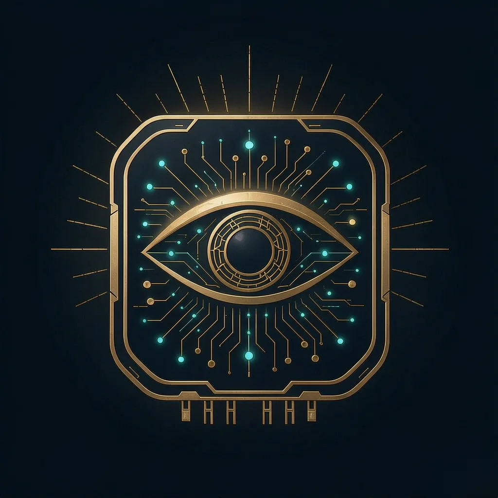

神机
SHENJI · GOD AI

全网渠道汇集 · 一键注册辅助 · 资料自动保存
一次填写，全平台复用
无需密码、无需手机。首次用邮箱验证码即自动注册，之后用同一邮箱收码即可登录。系统对发送频率与失败次数有限制，防止批量注册。
在微信中打开可一键授权；电脑上打开会显示二维码，用微信扫码即可。授权后自动完成注册与登录。
手机号登录为可选项，推荐优先使用邮箱或微信，更方便且无需手机验证。
未登录也能正常使用工作台，数据保存在本机浏览器；登录后数据将同步至云端，换设备登录即可继续。
| 平台 | 状态 | 注册账号 | API Key | Base URL | 领取额度 | 资料链接 / 备注 | 操作 |
|---|
全部板块内置与自定义条目实时统计
筛选、编辑、启停、批量删除全部自定义条目
| 名称 | 板块 | 状态 | 链接 | 操作 |
|---|
跨板块搜索任意条目的名称、简介、标签与网址
设置靓号池的号码、说明与备注，保存后立即在前台生效
检查重复 ID、无效链接与关键字段缺失
导出全部数据备份，或从备份文件恢复